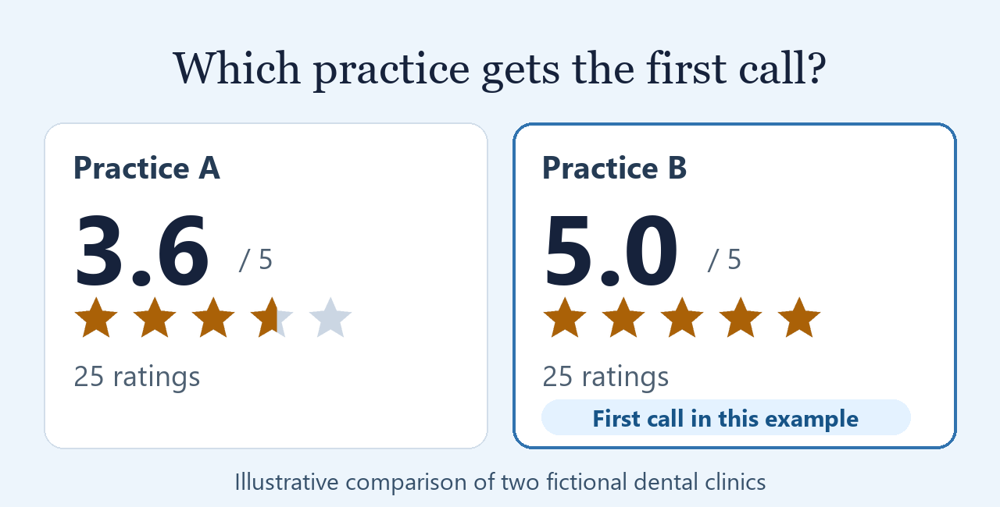

For Canadian dental practices
Google review removal for dental clinics
People often compare nearby dentists before making their first call. If fake, abusive or unrelated reviews distort your Google profile, ReviewsBoost can assess them and handle eligible reporting and follow-up.
The choice happens before the first call
Someone who just moved to the neighbourhood searches “dentist near me.” Two clinics have appointments next week and are equally convenient. One has 3.6 stars, the other has 5.0. The patient in this example calls the higher-rated clinic first. Your team might never know they were on the shortlist.

Patients also read the details. In a study of 310 participants on dentist choice among older adults, the tone of review text and ratings of the dentist’s manner and facility cleanliness influenced the decision to choose a dentist. A fabricated description of an unclean office can raise exactly the kind of concern a prospective patient is checking. Ponathil and colleagues’ dental-choice study.
What could one more new-patient booking be worth?
A fairer review profile can give someone more reason to contact you. To see what that is worth to your practice, follow the numbers from your Google profile to the front desk and through to completed visits. This model holds traffic and scheduling performance constant and changes only the inquiry rate.
| Measure | 5% inquire | 6% inquire |
|---|---|---|
| New-patient inquiries | 10 | 12 |
| Appointments booked at 50% | 5 | 6 |
| Expected first visits at 80% attendance | 4.0 | 4.8 |
| First-visit collections at CAD $300 per visit | CAD $1,200 | CAD $1,440 |
The difference is one extra booking and CAD $240 in expected monthly first-visit collections. Use your own inquiry, booking, attendance and collection figures to judge the opportunity. The table is a planning example, with the one-point improvement chosen to show how the calculation works.
Which Google reviews can a dental clinic report?
Start with the information you can verify. Google considers reviews for removal when they violate its policies. These are three situations worth assessing. Google’s Maps content policies · Google’s reporting and appeal process.
- A cluster of one-star posts arrives with copied wording or a documented conflict of interest. Keep the public links, screenshots and dates.
- A review promotes another business or clearly describes the wrong clinic. Save the wording that connects it to the other business.
- A post contains threats or exposes private information. Record the relevant details securely inside the practice and share only what is necessary for the assessment.
Feedback about a genuine wait-time, billing or communication problem can help you fix the experience for the next patient. If you reply publicly, keep it general and invite the person to contact the practice through its usual private channel. Ontario’s dental regulator advises dentists to avoid confirming the reviewer is a patient. Ontario regulator guidance on responding to reviews.
Give nearby patients a reason to choose your clinic
Check what a new patient sees from their phone. Put current hours, a working booking link and accurate service details on the profile. Make it easy to tell which location is accepting new patients and how soon someone can be seen. Google considers relevance, distance and prominence when ordering local results, so the star rating is one part of how patients find and compare practices. Google’s guidance on local ranking.
For each suspected policy violation, save the public review link and date, then have one team member record what happened. Compare inquiries and completed first visits over similar periods. Note changes in staffing, opening hours or ad spend so you can understand what else moved the numbers.
What ReviewsBoost handles for your practice
Start with a free assessment of the public review or profile link and a brief description of the concern. We check the facts against Google’s policies, tell you which reviews we can take on and explain what evidence would help. Keep patient names, appointment details and clinical records inside the practice.
If you approve the written quote, we prepare the evidence and report and handle the agreed follow-up, including applicable appeals. The fee is CAD $45 upfront per accepted review plus CAD $95 for each successful removal. For one review, that’s CAD $45 in service fees if it stays up or CAD $140 if it’s removed, before applicable taxes. Google makes the final decision. See how managed removal works.